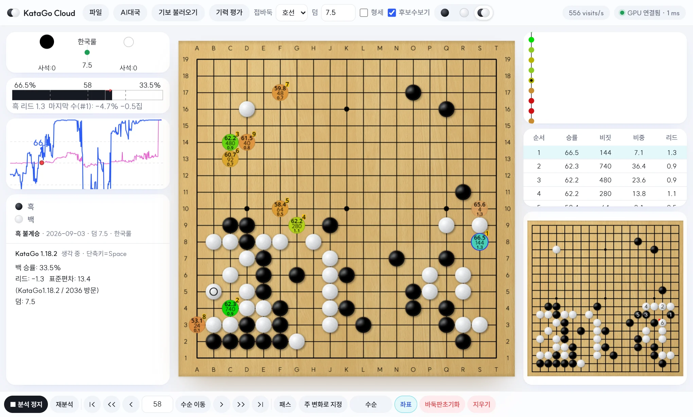
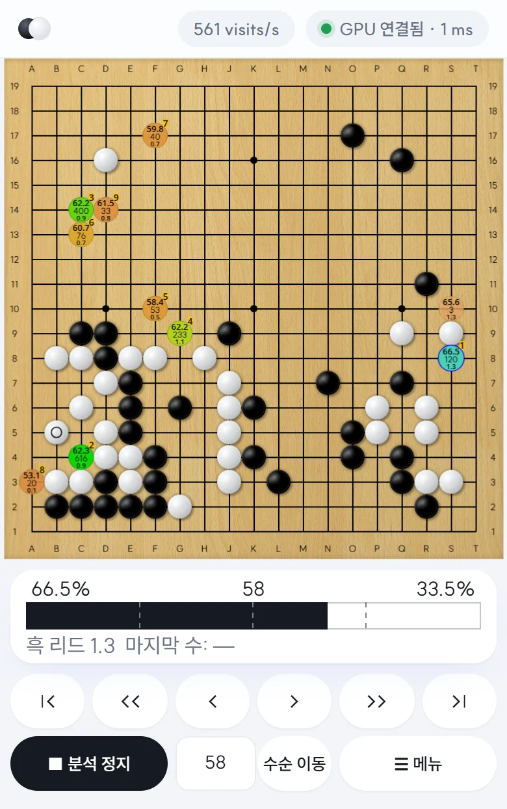
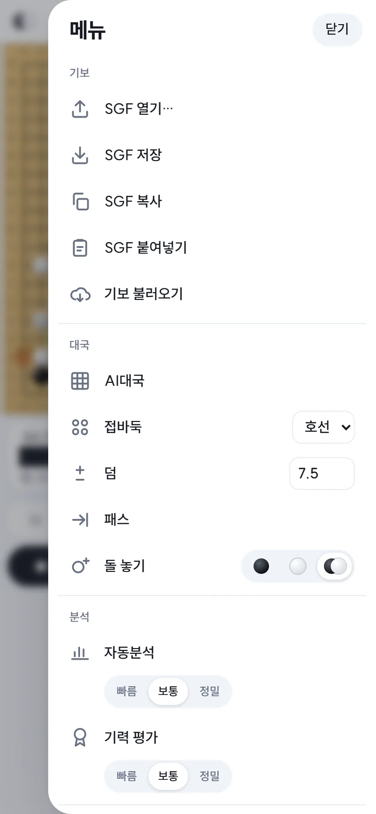

사용 가이드
KataGo Cloud는 GPU를 잠깐 빌려 KataGo를 돌리고, 브라우저에서 YZY(LizzieYzy)와 같은 화면으로 바둑을 분석하는 서비스입니다. 폰·태블릿·PC 어디서든 됩니다.
시작하기
- 회원가입 — 첫 화면에서 회원가입을 누르고 이름, 이메일, 비밀번호(8자 이상)를 넣습니다. 가입하면 바로 로그인됩니다.
- 충전 — 요금은 미리 충전한 잔액에서 나갑니다. 충전은 관리자에게 요청하세요. 충전되면 홈 위쪽 내 잔액에 금액이 보입니다.
- GPU 시작 — 홈의 GPU 목록에서 하나를 골라 이 GPU로 시작을 누릅니다.
- 분석 화면 열기 — 3~6분 뒤 준비가 끝나면 분석 화면 열기 버튼이 나타납니다. 새 탭에서 분석 화면이 열립니다.
- GPU 종료 — 다 쓰면 반드시 GPU 종료를 누르세요. 그 순간 요금이 멈춥니다.
GPU 빌리기
홈의 GPU 시작 칸에는 지금 빌릴 수 있는 GPU 중 가격에 비해 성능과 안정성이 좋은 것만 추려서 보여 줍니다. 반응이 느린 먼 지역(중국·호주·미국·유럽 등)은 뺐습니다.
| 칸 | 뜻 |
|---|---|
| 지역 | GPU가 있는 곳입니다. 한국에 가까울수록 착수 후 분석이 빨리 뜹니다. |
| GPU | 그래픽카드 이름입니다. 숫자가 클수록(예: 3060 < 5070 Ti < 5090) 대체로 빠르고 비쌉니다. |
| VRAM | 그래픽카드 메모리입니다. 목록에 있는 GPU는 모두 KataGo에 충분합니다. |
| 시간당 | 1시간 쓸 때의 요금입니다. 실제로는 1분 단위로 나갑니다. |
| 성능/$ | 가격 대비 성능입니다. Vast가 잰 GPU 성능 점수를 시간당 요금(달러)으로 나눈 값이라, 높을수록 같은 돈으로 더 많이 탐색합니다. 싸고 적당히 빠른 GPU를 고를 때 보세요. |
| CPU | CPU 코어 수입니다. 폰에서는 숨겨집니다. |
모델 고르기
목록 위 모델에서 KataGo 신경망을 고릅니다. 기본값은 Transformer 대형입니다. 큰 모델일수록 한 수를 더 정확하게 보지만 설치가 조금 오래 걸리고 1초에 볼 수 있는 수(visits/s)가 줄어듭니다. 잘 모르겠으면 기본값을 쓰세요.
시작부터 준비까지
줄을 누르면 그 아래에 이 GPU로 시작이 나타납니다. 누르면 요금을 한 번 더 확인하고, GPU를 빌린 뒤 세 단계가 차례로 채워집니다.
- GPU 빌리기·부팅 — GPU를 빌리고 켜는 중입니다.
- KataGo 설치·검증 — GPU가 KataGo와 모델을 받아 설치하고, 실제로 한 수 두어 제대로 도는지 확인합니다.
- 분석 준비 완료 — 분석 화면 열기가 빛나며 나타납니다.
한 계정은 한 번에 GPU 하나만 쓸 수 있습니다. 쓰는 동안에는 홈에 내 GPU 카드가 보이고, 지금까지 쓴 시간과 요금이 표시됩니다.
요금과 자동 종료
- 요금은 GPU를 빌린 순간부터 1분 단위로 잔액에서 차감됩니다. 준비하는 3~6분도 포함됩니다.
- 시작하려면 잔액이 그 GPU로 약 15분 쓸 만큼은 있어야 합니다.
- 준비 도중 실패해도 그때까지 쓴 시간의 요금은 나갑니다.
GPU가 스스로 꺼지는 경우
켜 둔 채 잊어버려도 요금이 계속 나가지 않도록, 아래 경우에는 GPU가 자동으로 꺼지고 삭제됩니다.
- 10분 동안 분석 요청이 없을 때 — 분석 화면 탭만 열어 두는 것은 사용으로 치지 않습니다. 수를 두거나 넘기며 분석하면 계속 켜져 있습니다.
- 잔액이 0원이 됐을 때
- 준비가 너무 오래 걸릴 때 — GPU에 문제가 있는 것으로 보고 끕니다.
직접 끄기
홈의 GPU 종료, 또는 분석 화면 위쪽 막대의 GPU 종료를 누르세요. 분석 화면 위쪽 막대에는 지금까지 쓴 시간과 요금도 보입니다(사이트에 로그인된 브라우저에서만). 삭제가 확인되면 요금이 멈추고, 사용 내역은 내 정보에서 볼 수 있습니다.
분석 화면
배치는 YZY와 같습니다. PC·태블릿 가로 화면에서는 아래처럼 보입니다.

1 2 3 4 5 6 7 8 9 10- 위쪽 막대 — 파일(SGF), AI대국, 기보 불러오기, 기력 평가, 접바둑·덤, 형세·후보수보기, 돌 놓기(흑·백·번갈아). 오른쪽 끝은 초당 탐색 수(visits/s), GPU 요금·종료, 연결 상태(초록 점 = GPU와 연결됨, 숫자 = 응답 시간).
- 사석·덤 — 흑·백이 따낸 돌 수, 덤, 한국룰. 가운데 초록 점은 지금 차례입니다.
- 승률 칸 — 왼쪽 흑·오른쪽 백 승률과 수 번호, 리드(몇 집 앞서는지), 마지막 수로 승률·집을 얼마나 잃었는지.
- 승률 그래프 — 파란 선은 흑 승률, 분홍 선은 리드. 빨간 점이 지금 수이고, 그래프를 누르면 그 수로 갑니다.
- 대국 정보 — 대국자·결과·날짜·덤, 엔진 상태(생각 중/멈춤), 지금 국면의 승률·리드·방문 수, 기보 댓글.
- 바둑판 — 후보수(색 동그라미)와 참고도. 읽는 법은 후보수 읽는 법을 보세요.
- 변화도 — 기보의 갈래. 점을 누르면 그 수로 갑니다.
- 후보표 — 후보수를 순서대로: 승률, 비짓(탐색 수), 비중(탐색 비율 %), 리드.
- 미리보기 판 — 후보표에서 고른 수의 예상 수순을 번호로 보여 줍니다.
- 아래쪽 막대 — 분석 시작/정지, 자동분석, 수순 이동, 패스, 주 변화로 지정, 수순·좌표, 바둑판초기화, 지우기.
휴대폰(세로 화면)
세로 화면에서는 바둑판을 크게 보여 주기 위해 바둑판 → 승률 막대 → 수순 이동 버튼 순으로 놓고, 나머지 기능은 모두 오른쪽 아래 ☰ 메뉴 안에 있습니다. 메뉴는 기보·대국·분석·보기·편집 다섯 칸으로 나뉩니다.


- 보기 칸에서 승률 막대와 승률 그래프를 켜고 끌 수 있습니다(기본: 막대 켬, 그래프 끔).
- 수순·좌표·세기·돌 놓기 버튼은 눌러도 메뉴가 닫히지 않아 여러 번 바꿔 볼 수 있습니다.
후보수 읽는 법
분석을 켜면 KataGo가 둘 만한 곳(최대 10곳)에 색 동그라미가 뜹니다.
- 하늘색에 파란 테두리 = KataGo가 가장 좋다고 보는 수(1순위, “블루스팟”).
- 나머지는 많이 탐색한 수일수록 초록, 적게 탐색할수록 빨강·옅은 색입니다.
- 노란 네모 숫자는 순서(1~9위)입니다.
- 후보수 위에 마우스를 올리면(폰은 길게 누르면) 그 수 이후의 예상 수순이 번호와 함께 참고도로 보입니다.
승률과 리드는 표시하는 순간 차례인 쪽 기준입니다. 왼쪽 승률 칸과 그래프는 흑·백 각각의 승률을 보여 줍니다.
조작법
마우스·키보드
| 동작 | 하는 일 |
|---|---|
| 바둑판 클릭 | 그 자리에 돌을 둡니다. 이미 둔 수와 다르면 새 변화가 생깁니다. |
| 후보수 위에 올리기 | 참고도(예상 수순)를 봅니다. |
| 마우스 휠 | 아래로 = 다음 수, 위로 = 이전 수. 터치패드도 됩니다. |
| ← → | 이전 수 / 다음 수 |
| Home End | 처음 / 끝으로 |
| Space | 분석 시작 / 멈춤 |
| 승률 그래프 클릭 | 누른 위치의 수로 이동 |
| 변화도 클릭 | 누른 수로 이동(다른 갈래로도) |
| 후보표 한 번 / 두 번 클릭 | 한 번은 그 후보의 수순을 미리보기 판에, 두 번은 그 수를 둡니다. |
| 수 번호 + 수순 이동 | 입력한 수로 바로 이동(Enter도 됨) |
터치(폰·태블릿)
| 동작 | 하는 일 |
|---|---|
| 바둑판 짧게 톡 | 돌을 둡니다. |
| 바둑판 길게 누르기 | 그 자리 후보수의 참고도를 봅니다. 누른 채 움직이면 따라가고, 손을 떼도 참고도가 남습니다. 다른 곳을 누르면 사라집니다. |
| 두 손가락 위아래 | 손가락을 내리면 다음 수, 올리면 이전 수 |
| 세 손가락 짧게 톡 | 한 수 뒤로 |
분석 기능
분석 시작
▶ 분석 시작을 누르면 지금 보는 국면을 멈출 때까지 계속 분석합니다. 수를 넘기면 새 국면을 바로 분석합니다. 위쪽 막대의 N visits/s는 1초에 몇 번 탐색하는지입니다.
자동분석과 세기
자동분석은 첫 수부터 지금 보는 수까지 모든 국면을 차례로 분석해 승률 그래프를 채웁니다. 세기는 세 가지입니다.
| 세기 | 한 수에 쓰는 탐색 |
|---|---|
| 빠름 | 250 visits — 대강 흐름을 볼 때 |
| 보통 | 500 visits — 기본값, 기력 평가에 가장 알맞음 |
| 정밀 | 1000 visits — 오래 걸리지만 더 정확 |
- PC 가로 화면에서는 자동분석을 누르면 세기 목록이 뜨고, 고르는 순간 시작합니다. 폰에서는 메뉴의 분석 칸에 세기 버튼이 따로 있습니다.
- 진행 중에는 버튼에 자동분석 n/N이 표시되고, 한 번 더 누르면 멈춥니다.
- 고른 세기 이상으로 이미 분석된 수는 건너뜁니다. 모두 분석돼 있으면 버튼이 재분석으로 바뀌고, 누르면 전부 다시 분석합니다.
- 세기는 자동분석과 기력 평가가 함께 씁니다. 그래서 자동분석을 해 두면 기력 평가는 기다리지 않고 바로 나옵니다(반대도 마찬가지).
보기 설정
| 버튼 | 하는 일 |
|---|---|
| 형세 | 바둑판에 흑·백 영역을 칠하고, 승률 칸에 “형세 흑 N집 우세 · 영역 흑 a · 백 b”를 보여 줍니다. |
| 후보수보기 | 후보수 동그라미를 켜고 끕니다. |
| 수순 | 누를 때마다 전체 수순 번호 → 마지막 수 번호만 → 끔으로 바뀝니다. |
| 좌표 | 바둑판 가장자리 좌표(A~T, 1~19)를 켜고 끕니다. |
돌 두기와 편집
| 버튼 | 하는 일 |
|---|---|
| ● ○ ◐ | 위쪽 막대의 돌 모양 버튼. 흑만 / 백만 / 번갈아(기본) 놓기. 사활 문제나 배치를 만들 때 흑만·백만을 씁니다. 폰은 메뉴 대국 칸의 “돌 놓기”. |
| 접바둑 · 덤 | 호선 또는 2~9점 접바둑. 접바둑을 고르면 표준 자리에 흑돌을 놓고 백부터 두며, 덤은 0.5가 됩니다. |
| 패스 | 차례를 넘깁니다. |
| 주 변화로 지정 | 지금 보는 갈래를 기보의 본선으로 올립니다. 자동분석·기력 평가는 본선을 따라갑니다. |
| 지우기 | 지금 수와 그 뒤의 수를 지웁니다. |
| 바둑판초기화 | 기보를 지우고 빈 호선 판(덤 6.5)으로 돌아갑니다. |
기력 평가
기력 평가는 한 판의 본선을 수마다 분석해서 흑과 백이 각각 몇 단·몇 급 정도로 두었는지 추정합니다. YZY의 기력 평가와 같은 모델(XGBoost 20TUN)을 씁니다.
- 결과 카드 흑기력 · 백기력에 “8.7단”처럼 등급이 나오고, 자신감, AI 최선 수와 같은 수를 둔 비율, 좋은 수 비율, 평균 손실(집) 등이 함께 표시됩니다.
- 세기는 보통(500 visits)을 권합니다. 모델이 이 조건으로 학습돼서, 빠름은 조금 높게, 정밀은 조금 다르게 나올 수 있습니다.
- 275수 한 판을 보통으로 평가하면 RTX 3060 기준 약 2분 걸립니다. 창을 닫아도 계속 진행되고(버튼에 기력 평가 n/N), 끝나면 아래 막대에 알림이 뜹니다. 그동안 다른 분석도 그대로 쓸 수 있습니다.
- 결과가 있을 때 재평가를 누르면 지금 세기로 모든 수를 다시 분석해 평가합니다.
AI대국
AI대국을 누르면 설정 창이 뜹니다.
| 설정 | 내용 |
|---|---|
| 대국 | 인공지능과 대국(내가 한쪽을 둠) 또는 인공지능끼리 대국(구경) |
| 시작 | 새 대국 또는 지금 판에서 이어서 두기 |
| 내 돌 | 흑 / 백 / 무작위 |
| 접바둑 · 덤 | 새 대국일 때 호선·2~9점, 덤 |
| 대국자 | 흑·백 이름(기보 저장 때 들어감) |
| AI세팅 | “N초당 한 수”(생각 시간) 또는 “N visits당 한 수”(탐색량). 인공지능끼리면 흑·백 따로 정합니다. |
| 초반 무작위 | 10·20·40수까지 상위 3후보 중 하나를 골라 매번 다른 판이 되게 합니다. |
| AI 기권 | 정한 수 이후, 연속 몇 수 동안 AI 승률이 몇 % 미만이면 AI가 돌을 던집니다. |
| 후보수 보임 | 흑 차례 / 백 차례에 후보수를 보여 줄지. 사람과 둘 때는 기본으로 꺼져 있습니다. |
AI는 분석의 1순위 수(블루스팟)를 둡니다. AI 차례에는 바둑판을 눌러도 돌이 놓이지 않습니다. 양쪽이 연달아 패스하면 끝나고 KataGo 판정이 결과로 기록됩니다. 대국 중에는 버튼이 ■ 대국 중지로 바뀝니다. 설정은 다음에도 그대로 남습니다.
기보
파일 메뉴
- SGF 열기 — 내 기기의 SGF 파일을 엽니다.
- SGF 저장 — 지금 기보를 SGF로 내려받습니다. 분석값(승률·리드·후보수 20개와 수순)도 함께 저장돼서, 다음에 열면 다시 분석하지 않아도 그래프와 후보수가 보입니다.
- SGF 복사 / 붙여넣기 — 클립보드로 주고받습니다. 다른 프로그램이나 메신저의 SGF를 붙여넣을 때 편합니다.
기보 불러오기(한큐바둑)
기보 불러오기에서 한큐바둑(野狐) 닉네임을 검색하면 최근 대국 약 100판이 나옵니다. 줄을 누르면 그 판이 바둑판에 열리고, 대국자·단·결과·날짜가 왼쪽 대국 정보에 채워집니다.
여러 기기에서 함께 보기
한 계정의 분석 판은 하나입니다. 노트북에서 GPU를 켜고 분석하다가 같은 계정으로 폰에서 분석 화면을 열면, 노트북 화면과 같은 판이 뜨고 서로 따라 움직입니다. 기기 수 제한은 없습니다.
- 한쪽에서 두거나 수를 넘기면 다른 기기도 같은 수로 갑니다.
- 실시간 분석은 판마다 하나만 돕니다. 어느 기기에서든 켜고 끌 수 있고, 분석을 돌리던 기기가 나가면 남은 기기가 이어받습니다.
- 위쪽 막대 연결 상태에 지금 붙어 있는 기기 N대가 보입니다.
- 폰에서 열 때는 폰 브라우저로 사이트에 로그인한 뒤 홈의 분석 화면 열기를 누르세요.
내 정보
홈 위쪽 내 정보에서 할 수 있는 일입니다.
- 이름 바꾸기
- 비밀번호 변경 — 현재 비밀번호를 확인한 뒤 바꿉니다(8자 이상).
- 사용 내역 — GPU를 쓴 기록(한 번 쓸 때마다 한 줄, 쓴 시간과 GPU)과 충전 기록.
- 회원 탈퇴 — 켜져 있는 GPU를 먼저 끄세요. 남은 잔액은 돌려받을 수 없으니 환불이 필요하면 탈퇴하기 전에 관리자에게 요청하세요.
자주 묻는 질문
“분석 화면 열기”가 안 나타나요.
보통 3~6분 걸립니다. 홈의 세 단계 중 어디까지 왔는지 보세요. 너무 오래 걸리면 GPU가 스스로 꺼지고 “실패”로 표시됩니다. 그때는 다른 GPU를 골라 다시 시작하세요.
연결이 끊겼다고 나와요.
폰 화면이 꺼지거나 네트워크가 바뀌면 잠깐 끊겼다가 자동으로 다시 붙습니다. 계속 끊겨 있으면 홈에서 GPU가 아직 “사용 가능”인지 보세요. 10분 동안 쓰지 않아 자동으로 꺼졌을 수 있습니다.
분석이 느려요.
위쪽 막대의 visits/s를 보세요. 자동분석이나 기력 평가가 도는 동안에는 GPU를 나눠 쓰므로 실시간 분석이 느려집니다. 더 빠른 GPU(5070 Ti, 5090 등)나 작은 모델을 고르면 빨라집니다.
탭을 닫았는데 요금이 나가나요?
탭을 닫아도 GPU는 켜져 있다가 10분 동안 분석 요청이 없으면 스스로 꺼집니다. 그 사이의 요금은 나가니, 다 썼으면 GPU 종료를 누르세요.
분석 결과를 나중에 다시 보고 싶어요.
파일 → SGF 저장을 쓰세요. 분석값이 함께 저장돼서 다음에 열면 GPU를 켜지 않아도 그래프와 후보수를 볼 수 있습니다(새로 분석하려면 GPU가 필요합니다).
YZY와 결과가 조금 달라요.
모델과 탐색량(visits)이 같아야 결과가 비슷합니다. 특히 기력 평가는 분석 조건에 따라 단 단위로 달라질 수 있습니다. 같은 모델을 고르고 세기를 보통(500 visits)으로 맞춰 비교해 보세요.